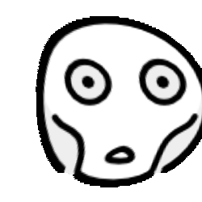

虽然因为各种原因还是没能做到实地诊断，但网友依然实打实的从幼年阶段就有点子ADHD倾向，最近突然又被此特性殴打后怨念地看起相关资料又看着了ADHD & 阅读障碍友好字体和排版相关，然后想起了些之前因为一些视觉小说游戏的中文文字显示问题产生的奇怪想法。
英文方面现有的阅读辅助工具
首先关于字体这方面能被拿来说的其实目前只有英文（或者说表音文字）方面的，设计初衷是辅助读写障碍1群体的字体。有Dyslexie和OpenDyslexic之类的。通过特殊的设计比如调整了部分字母的笔画重心和一些细小的线条方向区别以改善相关群体识别字母笔画的状况和提高阅读速度，对注意力涣散人群也能起到一定阅读辅助作用。
（我自己倒是觉得OpenDyslexic字形里重的部分和轻的部分差距太大了看着还是有些吃力了，Dyslexie大概更舒服一些…）
（其实还莫名看见了有人试图按照这些字体给中文也做成这种底部更重的显示方式的帖子，但是就光这么把整个字符底部笔画加重的方式到底是不是真的能通用到表意文字上我暂且还是持一个怀疑态度……）
还有一种比较流行的东西是叫Bionic Reading的应用/插件，跟前面提到的读写障碍就没什么强关联了这个单纯就是把每个单词的头几个字母加粗的这么一种阅读辅助方式。对于我这种看字注意力严重乱飘就算一目十行都没有东西真正会进脑子的人来说，这个东西所谓的「加快阅读速度」的体验，其实应该是靠词头部分字母的加粗强调起到了强行吸引你目光让你下意识地把注意力真正放在每个词块上，这样让脑子也能更早识别出词汇与意思与各种接下来的联系等。之前有看到其他网友讲了个很恰当的形容：
平常的阅读体验像是坐滑梯一溜到底，这样做像是给滑梯装上了缓冲带。
差不多是这种感觉。

由早年汉化版视觉小说游戏的字体显示方式所联想到的
其余辅助阅读的工具（比如只把阅读视线限制在一行里的尺子之类的）在这里就暂且先不谈，但就Bionic Reading这个东西的辅助方式倒是让我突然就想起了自己之前玩一些汉化的日文视觉小说AVG或ADV等游戏时的体验。
以前一些游戏汉化过后经常会因为一些谜之问题导致使用的字体实际上总是不能完全显示一部分文字，于是就会被其他的字体替换，经常会是无衬线体为主+零星衬线体（默认宋体吧大概）的组合，如下面一些例子。


但是现在回过头看来这种显示方式构成的一种文字凹凸不平的观感，好像和Bionic Reading插件起到的增加对文字注意力的作用有点相似…？至少我个人是觉得这种感觉的文字会比全是同一个字体的文章更好读一些的样子？
于是试着做了一些*过于粗略不严谨*的测试，随便找了一段文本随机抽了点字出来用于更改各种衬线字体和无衬线字体，每个读一遍，想看看各种情况下到底哪种组合读起来可能更舒服一些…路过的朋友也可以试着看看可能哪个看起来更好（虽然我评论区还没修回墙内对不起！）。
（但是粗略不严谨：电脑上现有字体衬线体和装饰体压倒性地多但完全没下无衬线体，乱选字体翻来覆去只有那么几个能选还要避免太花哨的；很多字体默认字重也不一样加粗了也不一样不知道该怎么比较……）
（并且我也知道我这么拼图大概会让人直接进行一个晕字，以及电脑端fancybox看图器这个默认缩放数值我调不太来放长图的话大概会更没法看。。不是移动端的话大概只能眯着眼看or存下来看了……（对不起


结果到最后自己比了半天因为无衬线+加粗无衬线字体那里两个字体甚至连文字基线都不一样了所以其实最终觉得这个例子是读起来最舒适的？？次之是无衬线字+加粗衬线字。
（12.3: 先前刚写的时候可能脑子真的看字看浑了竟然会觉得衬线+加粗无衬线看着还行，也忘记看黑底白字的情况了（主文本应该还是默认字重比较好…） 。。以及实际上最近看见了一个说法是：无衬线字其实更适合在屏幕上阅读，而衬线字更适合实体印刷不适合屏幕阅读。想到这个事于是刚才在我用试着用手机看这网页的时刻终于还是成功感受到后者的正确性了好像其实真的有点难以看下去，，所以还是火速前来给博客换个字体好了，，，）
所以其实还是觉得真的要做到像英文那样只要加粗几个开头字母就能提高注意程度的效果，在中文里可能还得更多考虑到字的大小、字的水平线、以及字的颜色（视觉小说那的例子里文字都是白底加了黑投影的，更容易打造出「凹凸不平」的感觉，可能这种情况下反而是看起来「凹进去」的普通衬线字更为吸睛…）等各种条件……还是挺复杂的。
所以最终想法是
有无国内研究者想一想中文方面的解决方案做个相关的阅读辅助插件什么的呢（弱弱），，我的不负责任迷思也只能到这里了，但还是会觉得如果真的按照这些记录来弄一个随机抽出文章部分文字换成其他字体，这些部分与主要文字也都一起能自由调整上述甚至是字体基线的细节的插件的话说不定是能成的…？但问题就是这个事情一没有研究根据二网友不会写代码（…），所以也就只能成为暂且记在这里也不知道有没有人能看到的神秘笔记惹…
以及依然需要向上述那些英文方面辅助方案的作者们致敬，感谢他们做了这些东西。障碍的程度仍然是一个连续的谱，一些更为细小的，未能到「社会标准种肉眼可见意义上的严重」的情况对部分人群来说也仍然会是一种障碍，我们仍然需要更多能够注意到这些细小的情况并试图做出改善和分享经验的人……
-
（国内的称呼甚至引的中文wiki称呼都还只强调了阅读的部分，其实还是有包含书写方面的障碍…只能说信息还是有点跟不上且这边还有表意文字使用区的特殊性） ↩︎
目录
-